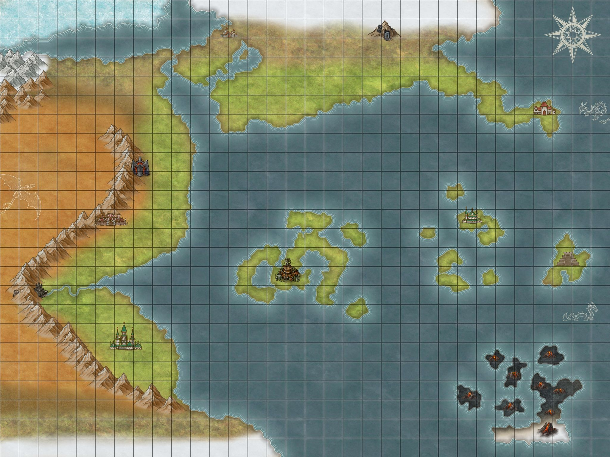
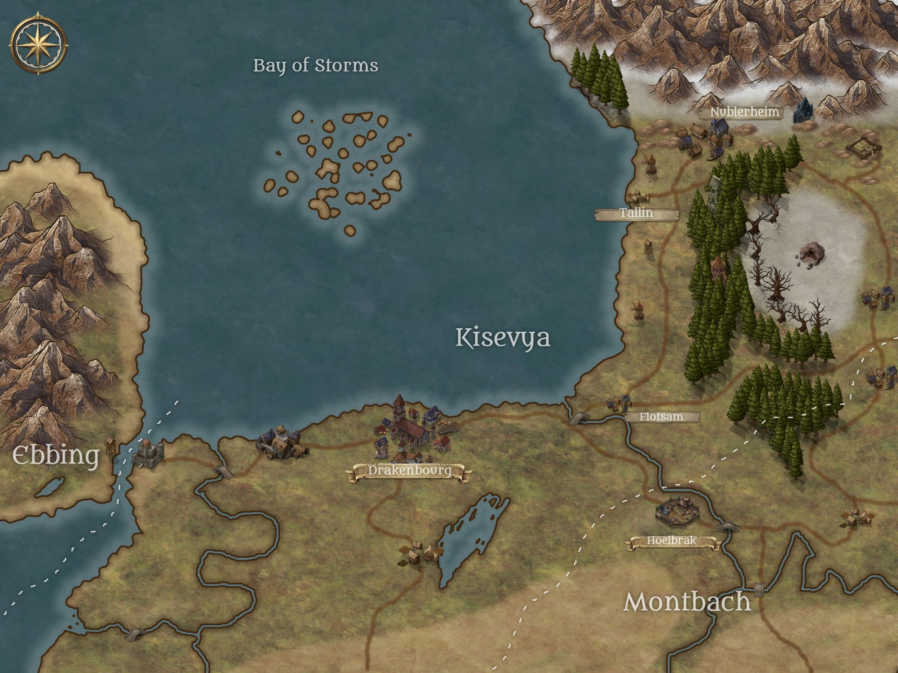
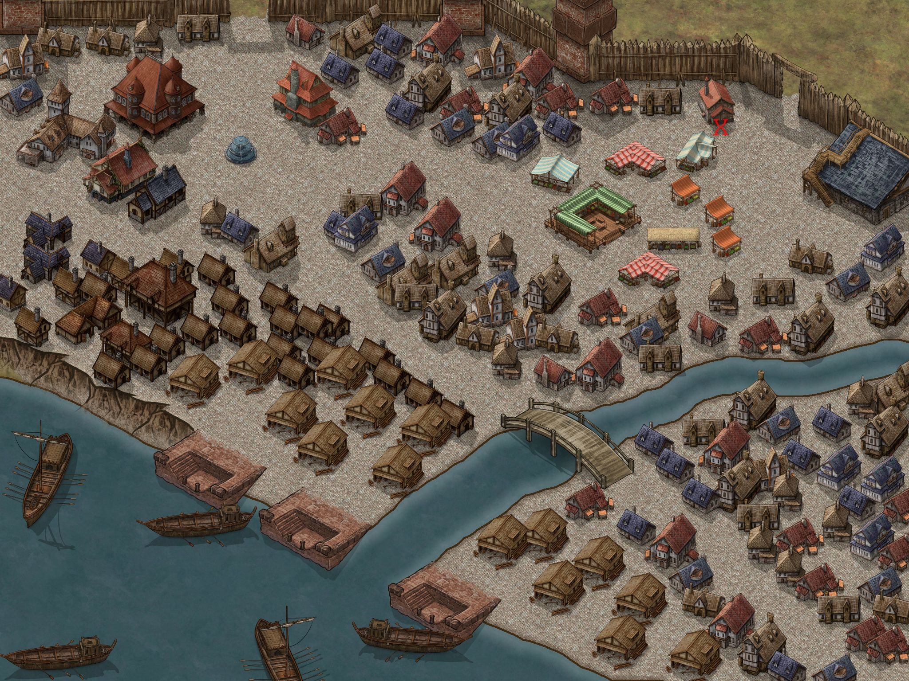

Maps of the World.

Main World Map.
The land of XXX a land full of stride and struggle where our adventurous strive for answers.

The Land of Kisevya.
The land of Kisevya. to the west the ocea and the infamous bay of Storms including a small river cutton off land access to the land of Ebbing.
To the south and east Kiseyva shares a land border with the land of Montbach and to the north the dreaded mountain border.

The Town of Floatsam
The towsn of floatsam boasts a population of 3000. It contains a small garrison of soldiers and is surrounded on all sides by a wooden palisade wall.
A small market is central to the towns success, alongside a small tavern and inn for traverlers to rest their weary bones and get a flagon of much deserved ale.